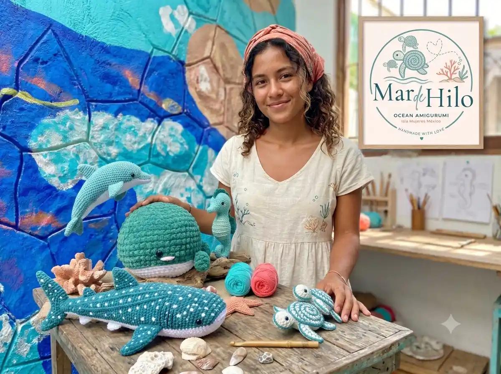

🖐️ Hecho a mano
Cada pieza es única, tejida con paciencia y dedicación, sin producción en masa.
Conoce a Meri y el origen de Mar de Hilo, donde el arte textil y el amor por el mar se encuentran.

Mar de Hilo nació en las playas de Isla Mujeres. No utilizamos moldes industriales; cada punto de crochet es colocado con intención por Meri, nuestra artesana principal, con más de 10 años de experiencia en técnicas textiles tradicionales.
Cada pieza es única, tejida con paciencia y dedicación, sin producción en masa.
Nuestros diseños celebran la fauna marina y promovemos la conservación oceánica.
Creamos piezas que transmiten emociones y conectan a las personas con la naturaleza.